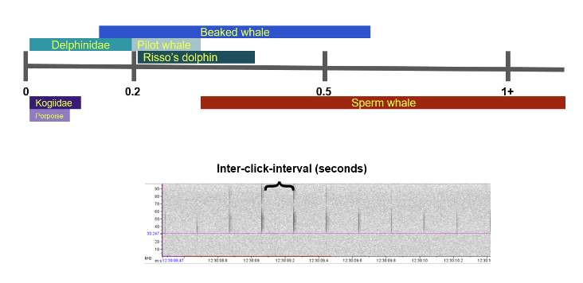

Odontocetes: Typically 10 - 170 kHz
In this section, we organize our odontocete species list by Sperm whale, Delphinidae (broadband, 30-50 kHz peak, and blackfish), Beaked whales, and narrow high-band frequency species (Porpoise, Kogiidae). Each section includes call types, spectra imagery, and wigner plots if applicable. Below is a figure differentiating inter-click-interval ranges of these odontocete groups.

Sperm whales
This section covers all sperm whale calls analyzed by NEFSC passive acoustics branch. A list of sperm whale call types and spectrogram examples are included below.
Scientific name: Physeter macrocephalus
Code: SPWH
Call types:
- Sperm whale coda
- Sperm whale social: coda
- Code: SPCODA
- Sperm whale social: coda
- Sperm whale creak
- Sperm whale terminal foraging buzz
- Code: SPCREAK
- Sperm whale terminal foraging buzz
- Sperm whale foraging
- When there’s a mix of sperm whale foraging call types (i.e. usual clicks and buzzes)
- Code: SPFORG
- When there’s a mix of sperm whale foraging call types (i.e. usual clicks and buzzes)
- Sperm whale slow click/ clangs
- Sperm whale social: slow clicks and clangs
- Code: SPSLCC
- Sperm whale social: slow clicks and clangs
- Sperm whale social buzz
- Sperm whale social: social buzz
- Code: SPSOCBZ
- Sperm whale social: social buzz
- Sperm whale social mix
- When there’s a mix of sperm whale social call types (i.e. codas & social buzzes)
- Code: SPMIX
- When there’s a mix of sperm whale social call types (i.e. codas & social buzzes)
- Sperm whale usual click
- Sperm whale echolocation click
- Code: SPUSC
- Sperm whale echolocation click

Spectrograms showing the Acoustic Events associated with trumpet emissions using Raven 2.0 (FFT and Hanning window size 1024 (A) and 512 (B, C, D), 50% overlap). A Regular, B, C, D multi-pattern arrangements (Pace et al. 2021)
Dolphins (Broadband, 30- 50 kHz peak, Blackfish)
Dolphinid and blackfish species produce various clicks and whistles. Dolphinid specie/click pairings are usually ground truthed used visual pairing techniques such as towed arrays. Due to the difficulty of pairing dolphinid species with their clicks, NEFSC PAB groups dolphin call types together using the following list. Whistles are more easily distinguished between species - spectrograms are included under each specie.
Call types across dolphin groups:
- Odontocete buzz
- Dolphin buzzes
- Code: ODBZ
- Dolphin buzzes
- Odontocete impulsive
- Dolphin clicks
- Code: ODCLICK
- Dolphin clicks
- Odontocete mixed calls
- When there’s a mix of whistles, clicks, burst pulses, etc. for dolphins
- Code: ODMIX
- When there’s a mix of whistles, clicks, burst pulses, etc. for dolphins
- Odontocete whistle
- Dolphin whistles
- Code: ODWHIS
- Dolphin whistles
- Odontocete burst pulse
- Dolphin burse pulses
- Code: ODBP
- Dolphin burse pulses
Broadband

Bottlenose dolphin
Scientific name: Turiops truncatus
Code: BODO

Short beaked Common dolphin
Scientific name: Delphinus delphis
Code: SADO

30-50 kHz peak

Rissos dolphin
Scientific name: Grampus griseus
Code: GRAM

Atlantic spotted dolphin
Scientific name: Stenella frontalis
Code: WSDO

Striped dolphin
Scientific name: Stenella coeruleoalba
Code: STDO

Spinner dolphin
Scientific name: Stenella longirostris
Code: SNDO

Blackfish
Along with belugas and narwhales, blackfish can biphonate - produce multiple frequencies at once. This is observed in their pulsed calls (example below), and is used in species identification. A click spectra for NEFSC PAB blackfish species is included below.


Spectrographic example of a pilot whale pulsed call. Calls may consist of two components, an upper frequency component (UFC) that is a narrow-band tone, and a lower frequency component (LFC) that is a broadband pulse. The pulse repetition rate (PRR) is reflected by the sideband interval (SBI). Elements are distinguished by abrupt shifts in the PRR (Nemiroff & Whitehead 2009).
False killer whale
Scientific name: Pseudorca crassidens
Code: FKWH

Short finned pilot whale
Scientific name: Globicephala macrorhynchus
Code: SFPW

Globicephala spp.
Beaked Whales
Beaked whales produce two types of clicks (described below). Included is a spectrogram of a frequency-moduled beaked whale click and spectra plot encompassing all study species in this section (excluding northern bottlenose whale).
Call types across beaked whale groups:
- Beaked whale frequency modulated upsweeps
- Beaked whale foraging clicks
- Code: BWFMUP
- Beaked whale foraging clicks
- Beaked whale surface click
- Beaked whale communication, does not contain frequency-modulation
- Code: BWCLICK
- Beaked whale communication, does not contain frequency-modulation

Beaked whale click spectra plot (DeAngelis et al. 2018)
Sowerby’s beaked whale
Scientific name: Mesoplodon bidens
Code: SOBW

Blainville’s beaked whale
Scientific name: Mesoplodon densirostris
Code: BLBW

Gervais’ beaked whale
Scientific name: Mesoplodon europaeus
Code: GEBW

True’s beaked whale
Scientific name: Mesoplodon mirus
Code: TRBW

Cuvier’s beaked whale
Scientific name: Ziphius cavirostris
Code: CUBW

Gulf of Mexico’s Beaked whale (BWG, unknown)
Scientific name: Ziphiidae sp.
Code: BWG
Unid True’s/Gervais beaked whale
Scientific name: Mesoplodon mirus/europaeus
Code: MMME
Narrow high-band frequency
Narrow high-band frequency species include porpoises and Kogiidae species (Pygmy and Dwarf sperm whales). Both groups produce indifferentiable clicks (shown in Wigner plot). Clicks are differentiated by recording location - nearshore narrow high-band frequency clicks are denoted as porpoise clicks, offshore as Kogiidae clicks (map below). Porpoises also produce buzzes.
Call types across high-band frequency group:
- Narrow band high frequency click
- Narrow band high frequency clicks used by kogia and porpoises
- Code: NBHF
- Narrow band high frequency clicks used by kogia and porpoises

DeAngelis, A. 2023
Harbor porpoise
Scientific name: Phocoena phocoena
Code: HAPO
Call types:
- Porpoise buzz
- Buzzes used by porpoise species, either social or foraging
- Code: POBZ
- Buzzes used by porpoise species, either social or foraging
Pygmy sperm whale
Scientific name: Kogia breviceps
Code: PSWH
Dwarf sperm whale
Scientific name: Kogia sima
Code: DSWH

Malinka et al. 2021
Sources
Annamaria Izzi DeAngelis, Joy E. Stanistreet, Simone Baumann-Pickering, Danielle M. Cholewiak; A description of echolocation clicks recorded in the presence of True’s beaked whale (Mesoplodon mirus). J. Acoust. Soc. Am. 1 November 2018; 144 (5): 2691–2700. https://doi.org/10.1121/1.5067379
Chloe E. Malinka, Pernille Tønnesen, Charlotte A. Dunn, Diane E. Claridge, Tess Gridley, Simon H. Elwen, Peter Teglberg Madsen; Echolocation click parameters and biosonar behaviour of the dwarf sperm whale (Kogia sima). J Exp Biol 15 March 2021; 224 (6): jeb240689. doi: https://doi.org/10.1242/jeb.240689
Malinka CE, Tønnesen P, Dunn CA, Claridge DE, Gridley T, Elwen SH, Teglberg Madsen P. Echolocation click parameters and biosonar behaviour of the dwarf sperm whale (Kogia sima). J Exp Biol. 2021 Mar 26;224(Pt 6):jeb240689. doi: 10.1242/jeb.240689
Nemiroff L, Whitehead H. Structural characteristics of pulsed calls of long-finned pilot whales Globicephala melas. Bioacoustics. 2009;19:67–92. doi: 10.1080/09524622.2009.9753615.
Pace, D.S., Lanfredi, C., Airoldi, S. et al. Trumpet sounds emitted by male sperm whales in the Mediterranean Sea. Sci Rep 11, 5867 (2021). https://doi.org/10.1038/s41598-021-84126-8